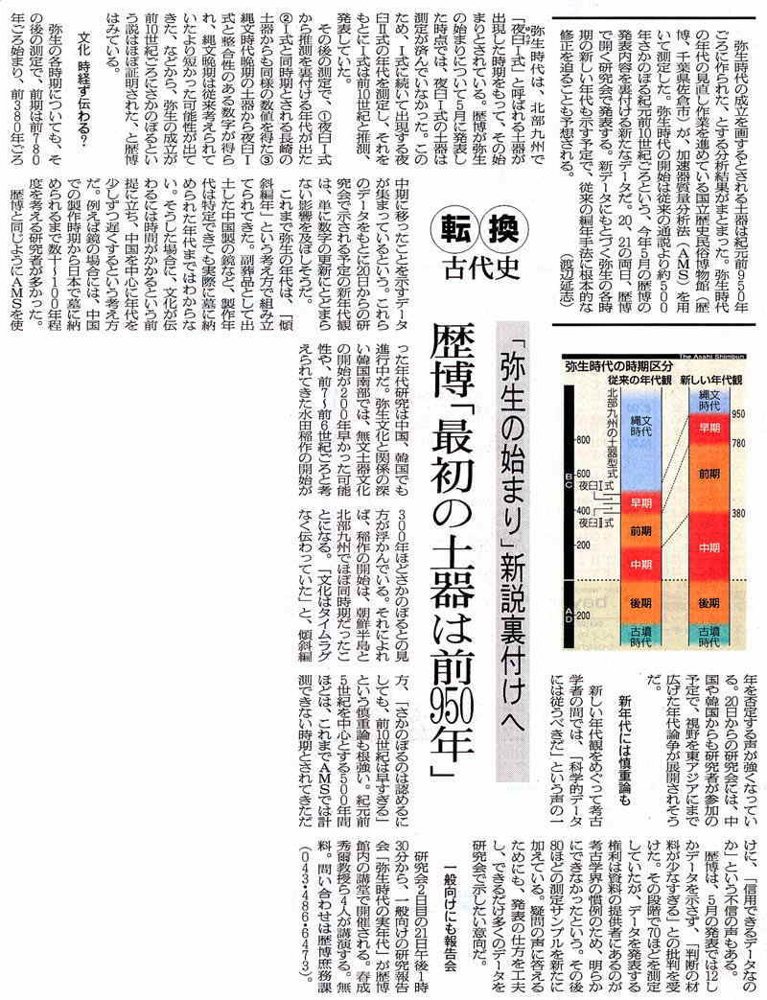

| 見たい項目をクリックして下さい | |||||||||
|
| 会員からの投稿（詳細-１９） |
| 朝日新聞２００３年１２月１７日夕刊 転換 古代史 「弥生の始まり」新説裏付けへ |
|
| 弥生時代の成立の時期に相当する土器は紀元前９５０年頃に作られた、とする分析結果がまとまった。国立歴史民俗博物館(歴博）が、加速器質量分析法（ＡＭＳ）を用いて測定した結果である。弥生時代の開始時期は従来の通説より約５００年遡るという、２００３年５月の歴博の発表内容を裏付ける新しいデータである。２００３年１２月１７日の朝日新聞夕刊の記事をそのまま転載する。 新聞が現われるまでしばらくお待ち下さい |
|  |
|
|